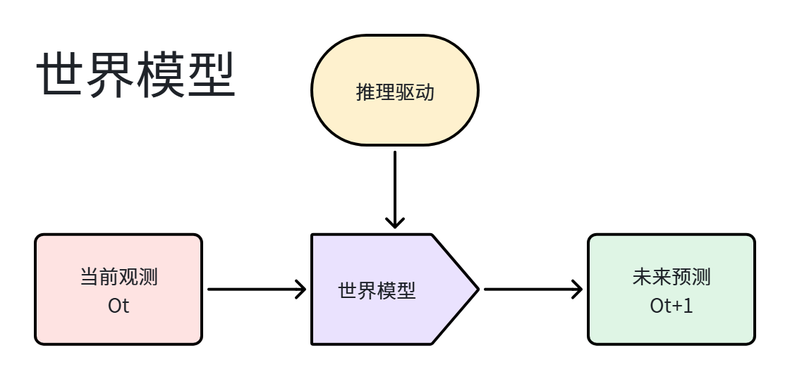
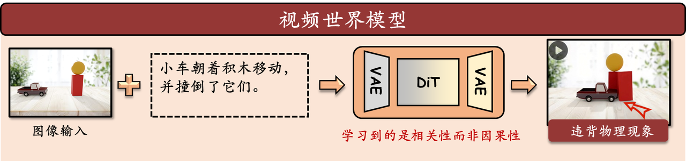
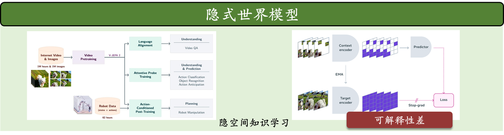
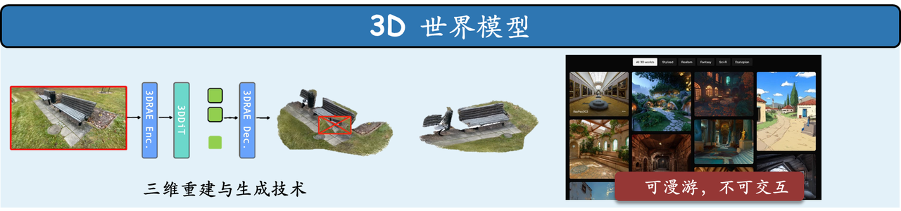
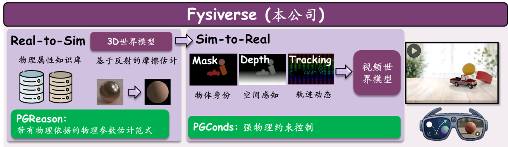
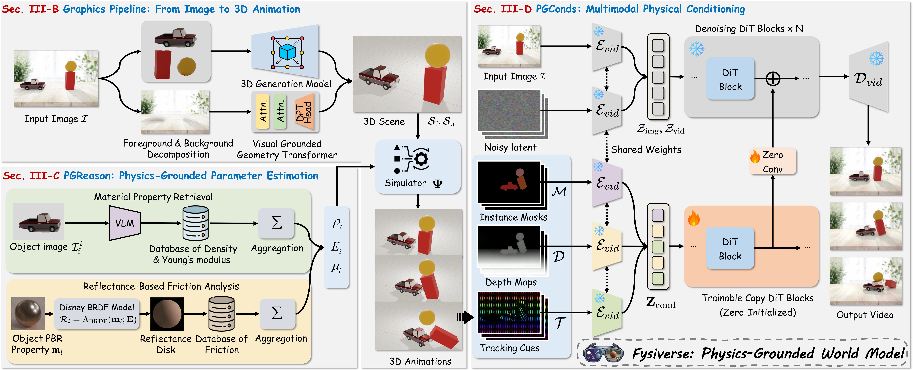
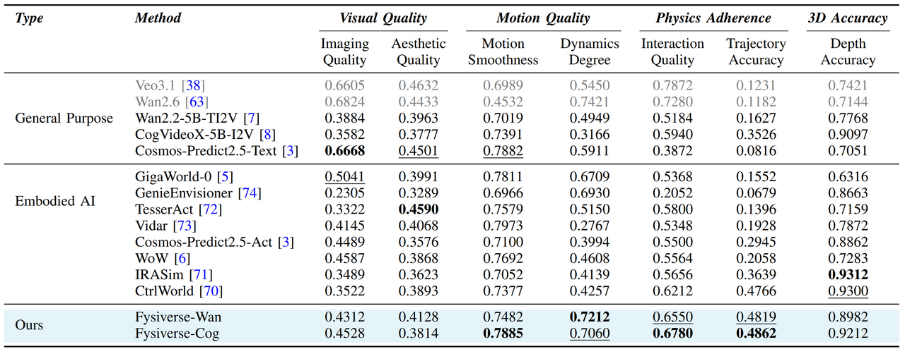

基于视频生成的世界模型：通过在互联网海量的视频中学习通用的世界知识，以条件生成的方式模拟世界（文/图生视频）。例如 OpenAI Sora，Google DeepMind Genie，NVIDIA Cosmos。
局限性：

隐式世界模型，同样也是通过视频世界模型学习世界的物理规律。例如 V-JEPA。
局限性：
总的来说，隐式世界模型为解决Physical AI的核心痛点，特别是数据效率和泛化问题，提供了一条极具前景的道路。它代表了一种从“看清世界”到“理解世界”的认知飞跃，是构建高效、智能决策体的关键技术。

基于3D的世界模型：通过3D重建与生成技术，生成可漫游的3D世界。例如3DGS、NeRF、WorldLabs Marble。

我们提出 Fysiverse，基于物理的世界模型。
因此，Fysiverse在视觉保真度、物理真实性两方面领先现有的世界模型。

Fysiverse 框架
文本: 地上放着四个柜子，最左边的那个向右倒下，结果把其他的柜子也带倒了。
文本: 一只泰迪熊向右上方弹起，随后在重力作用下自然下落，整个过程流畅且逼真。
文本: 一簇兔子形状的水团在重力作用下坠落并飞溅开来，整个过程流畅自然。
文本: 单机械臂打开笔记本电脑。
文本: 双机械臂将面包放到平底锅里。
